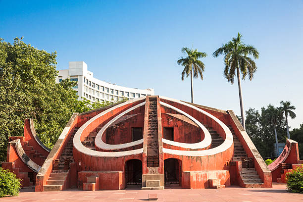
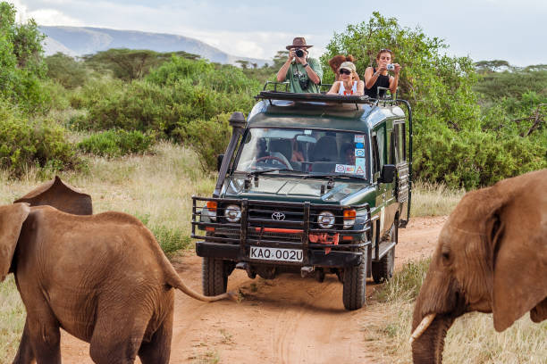
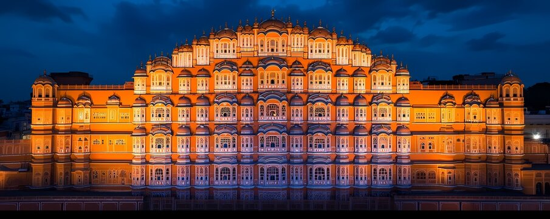
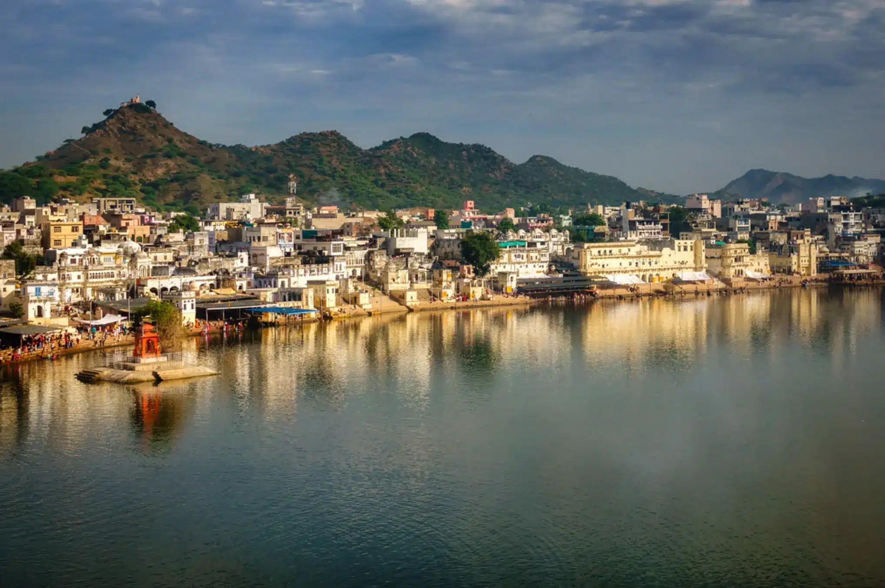

Assemble at Vadodara station by afternoon. Board the train/bus to Jaipur. Overnight journey.
Meals: Dinner
Arrive in Jaipur by morning. Check-in at hotel. Visit City Palace, Jantar Mantar, and explore Pink City markets.
Meals: Breakfast, Lunch, Dinner
Visit Amber Fort with an elephant/jeep ride. Explore Jaigarh Fort and enjoy panoramic views of Jaipur.
Meals: Breakfast, Lunch, Dinner
Visit the iconic Hawa Mahal, followed by Albert Hall Museum and local handicraft shopping in Bapu Bazaar.
Meals: Breakfast, Lunch, Dinner
Excursion to Pushkar. Visit Brahma Temple and Pushkar Lake. Evening return to Jaipur.
Meals: Breakfast, Lunch, Dinner
Check out after breakfast. Depart Jaipur by afternoon/evening. Arrive Vadodara by night. Trip ends.
Meals: Breakfast, Lunch